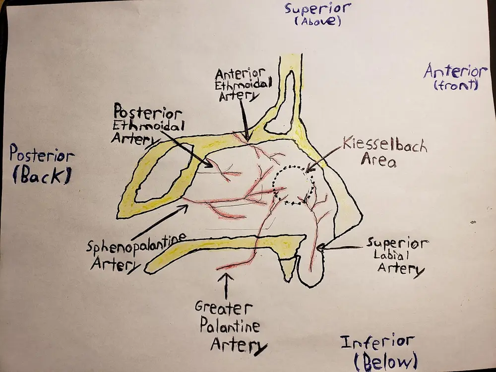

LOT_021 — Épistaxis — Phase A : monographie de la situation clinique et dix diagnostics différentiels
L'épistaxis s'arrête le plus souvent par une compression bien faite, mais elle peut tuer par choc ou par inhalation de sangS3S4. Le médecin écarte d'abord trois diagnostics graves : l'épistaxis sous antithrombotique (🚩 E1), le purpura thrombopénique immunologique (🚩 E2) et le cancer des fosses nasales ou des sinus (🚩 E3)S7S10S4. Il localise ensuite la source, arrête le saignement par paliers, puis cherche la causeS3S5. Le second bloc contient les dix diagnostics différentiels (DX).
1. Définition
Le Collège français des enseignants d'oto-rhino-laryngologie (ORL) définit en 2017 l'épistaxis comme un écoulement sanglant provenant des cavités nasalesS4. Le dictionnaire de l'Académie nationale de médecine, édition 2021, la décrit comme un saignement nasal lié le plus souvent à une érosion de la zone de KiesselbachS6. Elle constitue tantôt toute la maladie, tantôt le symptôme révélateur ou la complication d'une autre affectionS4.
2. Épidémiologie (Suisse, puis Europe)
Environ 60 % des personnes saignent du nez au moins une fois dans leur vie, mais seules 6 à 10 % d'entre elles consultentS5. Le support des Hôpitaux universitaires de Genève (HUG) décrit deux pics d'âge, avant 10 ans et entre 45 et 65 ans, avec une prédominance hivernaleS1. L'épistaxis reste l'urgence ORL la plus fréquente ; en Thuringe, 63,9 % des patients hospitalisés pour épistaxis prenaient un anticoagulantS9. Les chiffres suisses viennent de deux centres universitaires et décrivent surtout les formes vues aux urgencesS7S8. Leur détail par population éclaire la gravité réelle, et l'histoire naturelle montre que la récidive reste la règle.
Chiffres de l'épistaxis en Suisse et en Europe
| Chiffre | Population | Année | Source |
|---|---|---|---|
| 116 épistaxis sous anticoagulant oral sur 591, soit 16 % d'INR supra-thérapeutique parmi elles | Urgences ORL, Hôpital universitaire de Zurich | 2013 | S7 |
| 440 épistaxis non traumatiques sous phenprocoumone ou rivaroxaban en quatre ans | Urgences de l'Inselspital, Berne | 2012–2016 | S8 |
| Hospitalisation 18,0 % sous phenprocoumone contre 10,4 % sous rivaroxaban | Même cohorte bernoise | 2017 | S8 |
| Incidence hospitalière 42 pour 100 000 hommes et 28 pour 100 000 femmes ; 222 pour 100 000 hommes de plus de 85 ans | Tous les services ORL de Thuringe | 2016 | S9 |
| 121 consultations pour 100 000 habitants dans deux services d'urgence ; 71 % des hospitalisés ont 65 ans ou plus | Deux services d'urgence, revue allemande | 2018 | S5 |
| Hospitalisation de 10 à 28 % des épistaxis vues, selon les séries | Revue de l'atelier HUG | 2010 | S1 |
Ces séries comptent des patients hospitaliers ; elles surestiment donc la gravité des épistaxis arrêtées à domicileS5S9. Aucune incidence suisse en population générale ne figure dans les sources lues, ce qui interdit de transposer ces taux au cabinetS7S8.
Histoire naturelle et pronostic
À Zurich, 22 % des patients traités ont récidivé du même côté pendant un suivi moyen de 6,4 ansS12. Dans une autre cohorte zurichoise, 41,5 % des patients rapportaient au moins une récidive après 76,58 mois en moyenneS13. La prise d'un antivitamine K multipliait ce risque de récidive par un rapport de cotes de 11,6S13. Tous les patients réopérés pour une récidive prenaient de l'acide acétylsalicylique, ce qui en fait un facteur de sévéritéS13.
La mortalité d'une cohorte zurichoise dépassait celle de la population suisse : 34 % des patients suivis sont décédés pendant l'observationS10. L'âge, une localisation antérieure et un trouble hémorragique associé prédisaient indépendamment ce décès précoceS10. Les auteurs proposent donc de considérer une consultation d'urgence pour épistaxis comme un signal d'alarme sur l'état généralS10.
3. Physiopathologie
L'épistaxis se comprend mal sans la carte des artères nasales, que la fenêtre Base à connaître installe d'abordS4. La muqueuse nasale est fine, collée au squelette et richement vascularisée, trois traits qui expliquent la fréquence du saignementS4. Ses artérioles n'ont pas de limitante élastique interne ; elles se contractent donc mal après une effractionS4. Les caillots entretiennent le saignement par fibrinolyse locale, d'où le mouchage avant toute compressionS3S4.
Base à connaître : vascularisation des fosses nasales
Les fosses nasales reçoivent le sang des deux systèmes carotidiens, reliés par de nombreuses anastomosesS3S4. L'artère carotide externe donne l'artère maxillaire, dont la branche terminale devient l'artère sphénopalatine au foramen sphénopalatinS4. Cette artère sphénopalatine est l'artère principale des fosses nasales et nourrit les cornets et la cloisonS4. L'artère faciale vascularise la partie antéro-inférieure de la cloison par l'artère de la sous-cloisonS4.
L'artère carotide interne donne l'artère ophtalmique, puis les artères ethmoïdales antérieure et postérieure, qui descendent à travers la lame cribléeS4. La tache vasculaire de Kiesselbach, sur la cloison antérieure, réunit les branches ethmoïdale antérieure, sphénopalatine et facialeS4. Elle saigne dans 90 à 95 % des épistaxis, alors que la source postérieure sphénopalatine en explique 5 à 10 %S1S5.
| Territoire | Origine | Ce qu'il impose |
|---|---|---|
| Tache vasculaire (Kiesselbach) | Carotides externe et interne | La compression et la cautérisation l'atteignent S4 |
| Artère sphénopalatine | Carotide externe | Elle se coagule par endoscopie ou s'embolise après échec du tamponnement S3 |
| Artères ethmoïdales | Carotide interne (ophtalmique) | On ne les embolise pas, car le risque d'accident vasculaire cérébral et de cécité est réel S4 |
Le piège consiste à croire qu'un saignement postérieur vient forcément d'un gros vaisseau ; la direction du sang ne localise pas la sourceS4. L'erreur évitée tient en une règle : localiser par l'examen, et non par l'endroit où le sang s'écouleS3S4.
Artères de la cloison nasale. Ce schéma dessiné à la main montre la cloison nasale de côté, avec l’avant à droite.

Lisez d'abord seul ce cliché (artères de la cloison nasale, vue latérale) : cherchez vous-même le signe.
La copie annotée porte les numéros des repères décrits ci-dessous.
- 1. La tache vasculaire de Kiesselbach, cerclée en pointillé, réunit les branches des deux carotidesS4.
- 2. L’artère sphénopalatine arrive par l’arrière et nourrit la cloison postérieureS4.
- 3. Les artères ethmoïdales descendent du toit nasal depuis l’artère ophtalmiqueS4.
- 4. L’artère labiale supérieure, branche faciale, atteint la tache vasculaire par la lèvre supérieureS4.
- Le schéma place l’avant à droite, ce qui inverse l’orientation habituelle des planches.
- Une source postérieure sphénopalatine reste invisible en rhinoscopie antérieure.
Ce que l'image décide. Un point visible dans le cercle se comprime puis se cautérise ; une source invisible en arrière relève du tamponnement et de l’ORL.

Caillot, fibrinolyse et hémostase
Le caillot formé dans la fosse nasale subit une fibrinolyse locale qui libère de nouveau le vaisseau ; le nettoyage précède donc la compressionS3. L'acide tranexamique inhibe cette fibrinolyse ; l'information professionnelle suisse retient l'épistaxis prolongée ou récidivante parmi ses indicationsS23. Un défaut de l'hémostase primaire, plaquettes ou facteur von Willebrand, prolonge le saignement muqueuxS4S20. Un défaut des facteurs de la coagulation, comme sous antivitamine K, prolonge aussi le saignementS4.
La pression artérielle s'élève souvent pendant le saignement, mais le stress et l'effet blouse blanche empêchent d'en conclure une causeS3. Sur 229 publications, une revue n'en a retenu que neuf, dont trois concluaient à une association et trois à son absenceS3. Une épistaxis sévère révèle cependant une hypertension chez 43 % des patientsS3. La part du terrain explique ensuite la durée et la récidiveS13S15.
Terrain : médicaments, vaisseaux et alcool
Le grattage digital reste la cause la plus fréquente ; les corticoïdes nasaux augmentent aussi le risque, de 8 % à 20 % en douze mois contre placeboS5. Entre 24 et 33 % des patients hospitalisés prennent un anticoagulant ou un antiagrégant plaquettaireS5. L'épaisseur intima-média carotidienne dépassait de 26 % celle des témoins chez les patients zurichois atteints d'épistaxis sévèreS14. Près de 5 % d'une cohorte zurichoise de 510 patients avaient une macrocytose, marqueur indirect d'une consommation excessive d'alcoolS15.
| Perturbation | Exploration qui la montre | Thérapeutique qui la corrige (mécanisme) |
|---|---|---|
| Effraction de la tache vasculaire | Rhinoscopie antérieure après mouchage S4 | Compression puis cautérisation : elles obturent le vaisseau S3 |
| Source postérieure sphénopalatine | Endoscopie nasale après rétraction de la muqueuse S3 | Tamponnement, coagulation endoscopique ou embolisation : ils ferment le territoire S3S11 |
| Fibrinolyse du caillot | Saignement repris dès le relâchement S3 | Mouchage, puis acide tranexamique si l'épistaxis récidive : il stabilise le caillot S23 |
| Surdosage en antivitamine K | INR au-dessus de la cible S7 | Correction de l'INR coordonnée avec l'hémostase locale (DX.2) S3 |
| Thrombopénie ou déficit en facteur von Willebrand | Hémogramme, puis analyses spécialisées S4S20 | Traitement de la cause, tamponnement résorbable S3S20 |
| Télangiectasies héréditaires | Inspection cutanéomuqueuse et histoire familiale S19 | Gestes locaux doux et prise en charge en centre spécialisé S3 |
| Spoliation sanguine | Pouls, pression artérielle, hémoglobine S3 | Remplissage, puis transfusion selon le seuil d'hémoglobine S3 |
4. Démarche diagnostique
Le médecin recherche d'abord la menace vitale : voies aériennes, circulation et abondance, avant tout interrogatoire détailléS3S4. Il exclut ensuite les trois diagnostics graves, dans l'ordre de rapidité de leur menaceS7S10. L'épistaxis sous antithrombotique (🚩 E1) est la plus fréquente des formes graves ; l'INR se demande dès l'arrivée chez tout patient sous antivitamine KS7S9S3. Le purpura thrombopénique immunologique (🚩 E2) se suspecte devant des pétéchies ou d'autres saignements, et l'hémogramme le révèleS4. Le cancer des fosses nasales ou des sinus (🚩 E3) se cherche devant une obstruction unilatérale chronique, un déficit de nerf crânien ou une exophtalmieS4. Le raisonnement pas à pas évite les erreurs classiques du débutant.
Raisonnement pas à pas devant une épistaxis
- Le mécanisme d'abord : un saignement abondant dégluti sous-estime la perte, car le patient avale une partie du sangS4.
- Le signe ensuite : la fréquence cardiaque, la pression artérielle, les sueurs et la pâleur mesurent l'abondance mieux que le volume racontéS4.
- L'examen enfin : l'endoscopie identifie le site du saignement dans plus de 70 % des cas, après anesthésie et vasoconstrictionS3.
- La décision : un saignement non localisé ou persistant après tamponnement antérieur bien posé relève d'un tamponnement postérieurS3.
L'erreur classique consiste à rassurer un patient de 78 ans parce que la narine ne coule plus, alors qu'il vomit du sang déglutiS4S5. Une pression systolique sous 80 mmHg avec tachycardie signe alors un choc hémorragique et impose la réanimationS3. Le débutant évite ce piège s'il inspecte systématiquement l'oropharynx et reprend les constantes après chaque gesteS3S4.
| DX | Élément qui tranche | Piège | Conduite si positif |
|---|---|---|---|
| 🚩 E1 — Sous antithrombotique (DX.2) | Médicament et INR sous antivitamine K S7 | Un INR normal ne mesure pas l'apixaban S3 | Hémostase locale, correction selon l'INR, avis spécialisé S3 |
| 🚩 E2 — Purpura thrombopénique immunologique (DX.6) | Hémogramme et pétéchies S4 | Une thrombopénie n'est pas forcément immunologique S4 | Tamponnement résorbable et hématologue S3 |
| 🚩 E3 — Cancer naso-sinusien (DX.10) | Endoscopie et imagerie S4 | Une ectasie visible n'exclut pas une tumeur associée S3 | Biopsie planifiée par l'ORL ; tamponnement évité hors extrême urgence S4 |
| Épistaxis antérieure essentielle (DX.1) | Point septal antérieur visible S4 | Elle se retient seulement après recherche d'une cause S3 | Compression puis cautérisation S3 |
5. Anamnèse ciblée et drapeaux rouges
L'interrogatoire ne doit jamais retarder l'hémostase ; il se mène pendant la compression, auprès du patient et de l'entourageS4. Le saignement lui-même se caractérise en premier : côté initial, durée, abondance, répétition et gestes déjà tentésS4. La recherche d'une obstruction nasale unilatérale oriente vers une lésion structuraleS4. Les autres saignements orientent vers un trouble de l'hémostase, et la liste des médicaments se relève avec l'heure de la dernière priseS3S4.
Caractériser le saignement
| Caractère | Forme typique | Forme atypique et sa raison |
|---|---|---|
| Siège et côté | Goutte à goutte par une narine, d'abord unilatéral S4 | Un saignement bilatéral d'emblée suggère une source postérieure ou un trouble de l'hémostase S3 |
| Voie d'écoulement | Extériorisé en avant S4 | L'écoulement dans le pharynx fait sous-estimer la perte S4 |
| Durée | Arrêt après compression S3 | Un saignement de plus de 6 heures prédit l'échec de l'hémostase S1 |
| Abondance | Faible, sans retentissement S4 | Plus de 250 ml prédit aussi l'échec ; le volume raconté reste peu fiable S1S4 |
| Facteur déclenchant | Grattage, air sec, hiver S1S5 | Un traumatisme facial fait chercher fracture et hématome septal S2 |
| Répétition | Épisode isolé S4 | Une récidive unilatérale impose une endoscopie S3 |
Un tamponnement posé dans les sept jours précédents prédit lui aussi l'échec de l'hémostase, ce que l'interrogatoire doit chercherS1.
Obstruction nasale unilatérale
Une obstruction chronique d'un seul côté, associée à l'épistaxis, est atypique de la forme essentielle ; elle fait chercher une tumeurS4. Chez le garçon pubère, elle évoque un angiofibrome nasopharyngien, tumeur vasculaire du pourtour choanalS22. Chez l'enfant, un objet introduit dans le nez fait évoquer un corps étranger, cause traumatique d'épistaxis (DX.4)S4. L'otite séreuse, un déficit de nerf crânien ou une exophtalmie associés renforcent la suspicion tumoraleS4.
Autres saignements et histoire familiale
Des hématomes faciles, des règles abondantes et un saignement après extraction dentaire orientent vers une maladie de von WillebrandS20. Cette maladie héréditaire touche autant les hommes que les femmes, ce qui rend l'histoire familiale utile dans les deux sexesS20. Des épistaxis répétées dans la famille, avec télangiectasies, orientent vers une maladie de Rendu-Osler, de transmission autosomique dominanteS3S19. Des pétéchies ou des gingivorragies récentes évoquent une thrombopénie, que l'hémogramme confirmeS4.
Médicaments et toxiques à relever
Le médecin note chaque anticoagulant et chaque antiagrégant, sa dose, l'heure de la dernière prise et l'indication qui le justifieS3. Cette indication mesure le risque thrombotique, que la décision de maintien ou d'arrêt doit peserS3. Il relève aussi les corticoïdes nasaux, les vasoconstricteurs locaux répétés et la consommation d'alcoolS5S15. L'abus de vasoconstricteurs nasaux peut léser la muqueuse et provoquer une rhinite médicamenteuseS25.
| Drapeau rouge | Signification | Action immédiate |
|---|---|---|
| Pâleur, sueurs, tachycardie, pression systolique sous 80 mmHg | Choc hémorragique S3 | Réanimation, deux voies veineuses, bilan prétransfusionnel S3 |
| Sang abondant dans le pharynx, conscience altérée | Menace des voies aériennes S3 | Protection des voies aériennes et position à 45° si aucune contre-indication S2 |
| Saignement qui « s'éclaircit » après un traumatisme | Fuite de liquide cérébrospinal S4 | Dosage de la bêta-2-transferrine et avis neurochirurgical urgent S2 |
| Exophtalmie pulsatile après traumatisme | Fistule carotidocaverneuse S4 | Imagerie vasculaire urgente S3 |
| Pile bouton dans le nez | Brûlure électrique des tissus, même pile déchargée S21 | Extraction en urgence (DX.4) S21 |
| Garçon pubère, obstruction unilatérale | Angiofibrome nasopharyngien S22 | Aucune biopsie ; tomodensitométrie et artériographie S22 |
6. Examen physique ciblé, région par région
Le soignant se protège par des lunettes, des gants, un masque et une blouse, puis installe le patient assis, penché en avantS1. L'examen suit l'ordre où on le réalise : d'abord l'état général, puis le visage et la peau, la pyramide nasale et la rhinoscopie antérieureS1S2S4. Viennent ensuite la cloison, l'oropharynx, l'endoscopie nasale et l'examen oculaire et neurologiqueS2S3S4.
État général et constantes
Le signe recherché est le retentissement de la spoliation : pouls, pression artérielle, anxiété, agitation, sueurs et pâleurS4. Le geste consiste à mesurer ces constantes à l'arrivée, puis à les reprendre après l'arrêt du saignement et l'apaisement du patientS4. Une pression élevée à l'arrivée peut être faussement haute ; seule une hypertension persistante justifie un traitement rapideS4. La mesure de la pression artérielle à la phase aiguë reste recommandée avec le grade AS3.
Visage, lèvres et peau
L'inspection faciale ouvre l'examen et recherche des télangiectasies ou des ecchymosesS4. Les télangiectasies de la maladie de Rendu-Osler siègent sur les lèvres, la langue, le palais, les doigts, le visage et les mainsS3. Ce sont de petites dilatations des vaisseaux de la peau et des muqueusesS19. Des pétéchies ou des ecchymoses multiples orientent au contraire vers un trouble plaquettaire ou un traitement antithrombotiqueS4.
Pyramide nasale après traumatisme
Le médecin regarde le patient de face, puis depuis le bas, et juge l'axe et la symétrie de la pyramide et des narinesS2. La palpation recherche des points douloureux, une fausse mobilité, une ensellure ou des crépitations d'emphysèmeS2. Elle explore aussi les planchers orbitaires et les os zygomatiques, car une fracture associée change la filièreS2. Le diagnostic d'une fracture isolée reste clinique ; aucune radiographie standard n'est demandée systématiquementS2.
Rhinoscopie antérieure
Le patient se mouche d'abord pour évacuer les caillots, puis le médecin examine la fosse nasale au spéculum, ou à l'otoscope à défautS2S4. Une mèche imbibée d'anesthésique et de vasoconstricteur, laissée quelques minutes, permet de rétracter la muqueuse et de localiser le pointS1S4. Dans l'épistaxis bénigne, le point saignant se voit sur la tache vasculaire, à la partie antéro-inférieure de la cloisonS4. Le piège consiste à multiplier les gestes aveugles dans une fosse qui saigne ; mieux vaut un tamponnement et un avis ORLS3.
Cloison nasale : hématome et perforation
Après un traumatisme, le médecin cherche un hématome de la cloison, tuméfaction molle, dépressible, arrondie en verre de montre, sombreS2. Cet hématome est le plus souvent bilatéral et impose un drainage par le spécialiste dans les 24 heuresS2. Méconnu, il se surinfecte en abcès et détruit le cartilage, avec ensellure nasaleS2. Une perforation septale se manifeste au contraire par un sifflement inspiratoire, des croûtes et des épistaxis modérées récidivantesS3.
Oropharynx et cavité buccale
L'examen pharyngé cherche un écoulement postérieur qui persiste malgré l'arrêt apparent du saignement narinaireS4. Ce signe fait suspecter une épistaxis postérieure ou un tamponnement antérieur insuffisantS4. Après traumatisme, l'examen endobuccal recherche aussi une fracture, une luxation dentaire ou un trouble de l'occlusionS2. L'hémoptysie s'extériorise lors d'efforts de toux, l'hématémèse lors d'efforts de vomissement : ces deux diagnostics différentiels se distinguent ainsiS4.
Endoscopie nasale
L'ORL utilise un endoscope rigide à 0° ou 30° et inspecte d'avant en arrière la cloison, les cornets, les méats et le rhinopharynxS4. Même en présence d'une ectasie de la tache vasculaire, l'endoscopie reste recommandée pour chercher une cause associéeS3. Elle montre une masse, des télangiectasies muqueuses, une perforation ou un corps étranger, et guide le traitementS3S4.
Examen oculaire et neurologique
Après un traumatisme, le médecin mesure le score de Glasgow et recherche un déficit des nerfs crâniens : olfaction, vision, pupilles, diplopie, sensibilité facialeS2. Une cécité, une diplopie ou un trouble olfactif imposent l'avis du spécialiste avant toute autre décisionS2. Hors traumatisme, une exophtalmie ou un déficit de nerf crânien associés à l'épistaxis font suspecter une tumeurS4.
7. Approche syndromique
Le médecin regroupe les signes en syndromes avant de nommer la maladie ; une lésion locale et un terrain hémorragique coexistent souventS4S5. Le syndrome antérieur localisé (7.1) s'oppose au syndrome postérieur (7.2), qui relève d'une autre filièreS3S4. Le syndrome traumatique (7.3), le syndrome obstructif unilatéral (7.4), le syndrome hémorragique diffus (7.5) et le syndrome télangiectasique (7.6) orientent chacun vers un groupe de diagnosticsS2S4S19.
Syndrome antérieur localisé
Il associe un écoulement unilatéral goutte à goutte, sans retentissement, et un point saignant visible sur la tache vasculaireS4. Il correspond à l'épistaxis essentielle du jeune, liée à des ectasies de la partie antéro-inférieure de la cloisonS4. La compression et la cautérisation le contrôlent ; la coagulation n'échoue que dans 14 % des cas antérieurs à ZurichS11.
Syndrome postérieur
Il associe un écoulement pharyngé, souvent bilatéral et antéropostérieur, et l'absence de point visible en rhinoscopie antérieureS3S4. Il touche surtout les patients âgés et dépend des artères sphénopalatinesS1. Le tamponnement le contrôle dans 62 % des cas, la chirurgie dans 97 %, selon la série zurichoiseS11.
| Syndrome | Signes fonctionnels | Signes physiques | Il évoque |
|---|---|---|---|
| 7.1 Antérieur localisé | Saignement unilatéral après grattage | Point septal antérieur S4 | DX.1 |
| 7.2 Postérieur | Sang dans la gorge, persistance malgré compression | Aucun point antérieur visible S3 | DX.1 ou DX.2 chez le sujet âgé S1 |
| 7.3 Traumatique | Douleur, obstruction après un choc | Déformation, fausse mobilité, hématome septal S2 | DX.3 |
| 7.4 Obstructif unilatéral | Nez bouché d'un côté, objet introduit | Masse ou objet en endoscopie S4 | DX.4, DX.9, DX.10 |
| 7.5 Hémorragique diffus | Gingivorragies, ménorragies, ecchymoses | Pétéchies, purpura S4S20 | DX.2, DX.6, DX.7 |
| 7.6 Télangiectasique | Épistaxis répétées, histoire familiale | Télangiectasies labiales et linguales S3 | DX.8 |
| 7.7 Croûteux septal | Croûtes, sifflement inspiratoire | Perforation de la cloison S3 | DX.5 |
8. Diagnostic positif et critères
Le diagnostic positif est clinique : il confirme l'origine nasale du sang et écarte une hémoptysie ou une hématémèseS4. La recommandation de la Société française d'ORL (SFORL) de 2016 évalue la sévérité sur des critères cliniques, hémodynamiques et biologiquesS3. Une épistaxis antéropostérieure d'emblée ou bilatérale oriente vers une forme sévère et fait chercher un chocS3. Les critères d'hospitalisation traduisent ensuite cette sévérité en décisionS1S3.
| Critère | Seuil ou constat | Ce qu'il établit |
|---|---|---|
| Hypotension | Pression systolique sous 80 mmHg, différentielle pincée S3 | Avec tachycardie et trouble de conscience, polypnée ou marbrures, un choc S3 |
| Anémie aiguë | Hémoglobine sous 70 g/L, ou sous 100 g/L si insuffisance coronarienne aiguë S3 | Une indication de transfusion après correction de l'hypovolémie S3 |
| Durée | Plus de 6 heures S1 | Un risque d'échec de l'hémostase, sans gravité à lui seul S1 |
| Volume | Plus de 250 ml S1 | Un risque d'échec ; le volume raconté reste approximatif S1S4 |
| Siège | Postérieur ou non localisable S1 | Une prise en charge hospitalière ORL S1 |
| Point antérieur visible | Ectasie de la tache vasculaire S4 | Ne suffit pas à exclure une cause associée S3 |
Critères d'hospitalisation
- L'échec de l'hémostase, l'instabilité hémodynamique ou des pertes importantes imposent l'hospitalisationS1.
- Une épistaxis postérieure ou non localisable, ou un trouble de la coagulation, l'imposent aussiS1.
- La SFORL ajoute la récidive, la transfusion, une comorbidité coronarienne et l'impossibilité d'une surveillance à domicileS3.
- L'âge, l'isolement et la précarité comptent parmi ces difficultés de surveillance, au même titre que l'accès aux soinsS3S1.
La maladie de Rendu-Osler repose sur les quatre critères cliniques de Curaçao : épistaxis récidivantes, télangiectasies, atteinte familiale et malformation artérioveineuse viscéraleS3. Le diagnostic est certain avec trois critères, possible avec deux et peu probable avec un seulS3. Une recherche génétique peut ensuite le confirmerS19.
9. Examens complémentaires
9.a Le diagnostic de référence reste l'examen clinique, complété par l'endoscopie nasale, qui localise la sourceS3S4.
9.b Une épistaxis non compliquée ne demande souvent aucune analyse sanguineS5. Une forme sévère impose le bilan biologique minimal, et l'INR se contrôle chez tout patient sous antivitamine KS3S7.
9.c Sous anticoagulant oral direct (AOD), les tests de coagulation renseignent mal, ce qui impose des dosages spécifiquesS3.
9.d L'imagerie et les analyses spécialisées de l'hémostase viennent en seconde intentionS2S3S20.
Bilan biologique minimal d'une épistaxis sévère
La SFORL recommande l'hémogramme, le temps de prothrombine avec INR, le temps de céphaline activée (TCA) et le fibrinogèneS3. Elle y ajoute le groupe sanguin, le rhésus, la recherche d'agglutinines irrégulières, l'ionogramme et la créatinineS3. L'hémogramme et le bilan prétransfusionnel sont indispensables, avec un grade CS3.
| Résultat | Signification | Conduite |
|---|---|---|
| Hémoglobine sous 70 g/L | Anémie aiguë mal tolérée S3 | Transfusion après correction de l'hypovolémie S3 |
| Plaquettes basses | Thrombopénie, cause à préciser S4 | Avis hématologique (DX.6) |
| INR au-dessus de la cible | Surdosage en antivitamine K S7 | Correction simultanée de l'hémostase locale (DX.2) S3 |
| Créatinine élevée | Accumulation possible de l'acide tranexamique S23 | Dose réduite selon la créatinine S23 |
| Hémoglobine basse sans saignement actif | Spoliation répétée S4 | Reconstitution des réserves martiales S4 |
Le piège consiste à demander un bilan d'hémostase pour toute petite épistaxis, alors que beaucoup de formes non compliquées n'en requièrent aucunS5.
INR sous antivitamine K
L'INR (international normalized ratio) mesure l'effet des antivitamines K sur les facteurs vitamine K-dépendantsS3. À Zurich, il dépassait la cible thérapeutique chez 16 % des patients sous anticoagulant oral reçus pour épistaxisS7. Les auteurs recommandent donc de le mesurer chez tout patient sous antivitamine K, quelle que soit la sévérité apparenteS7. La SFORL en fait une recommandation de grade A et règle la correction sur sa valeurS3.
Tests de coagulation sous anticoagulant oral direct
Le taux de prothrombine et le TCA renseignent seulement sous rivaroxaban ou édoxabanS3. L'apixaban ne modifie pas ces tests classiques ; son effet se mesure par un dosage spécifique ou par une activité anti-Xa interprétée par un spécialisteS3. L'heure de la dernière prise et la fonction rénale aident à estimer l'effet résiduel, car la coagulation se rétablit en 24 à 72 heures selon la moléculeS3.
Imagerie de l'épistaxis
| Examen | Indication | Ce qu'il montre |
|---|---|---|
| Aucune radiographie standard | Fracture nasale isolée S2 | Le diagnostic reste clinique S2 |
| Tomodensitométrie (CT) du massif facial | Fracture nasale potentiellement associée à une autre fracture faciale S2 | Fractures de Le Fort, zygomatiques, orbitaires S2 |
| Angio-CT du crâne et des troncs supra-aortiques | Épistaxis post-traumatique avec suspicion de lésion carotidienne interne S3 | Source de l'hémorragie avant embolisation S3 |
| CT et artériographie | Suspicion d'angiofibrome nasopharyngien S22 | Extension et vascularisation ; embolisation préopératoire S22 |
| Cone beam CT et photographies | Agression, à titre médico-légal, dans les 24 heures S2 | Preuve des lésions S2 |
Analyses spécialisées de l'hémostase
Une prise de sang permet le diagnostic de maladie de von Willebrand, mais des analyses plus poussées sont parfois nécessaires pour en préciser le typeS20. Les types 2A, 2B, 2M et 2N correspondent à un déficit qualitatif, le type 3 à une absence complète du facteurS20. La mesure du temps de saignement peut aider à orienter vers cette maladieS4. Après un traumatisme, un écoulement clair se teste par la bêta-2-transferrine, qui signe une fuite de liquide cérébrospinalS2.
10. Arbre décisionnel
- Si le patient est en choc ou si ses voies aériennes sont menacées → réanimation, voie veineuse, bilan prétransfusionnel, et hémostase locale en parallèleS3.
- Si le patient est stable → assis, penché en avant, mouchage, puis compression bidigitale continueS3S5.
- Si le patient prend un antivitamine K (🚩 E1) → INR immédiat, correction selon sa valeur et l'efficacité du tamponnement (DX.2)S3S7.
- Si des pétéchies ou d'autres saignements existent (🚩 E2) → hémogramme ; plaquettes basses → DX.6, tamponnement résorbableS3S4.
- Si un traumatisme précède → hématome septal drainé sous 24 heures, liquide clair testé, fracture associée cherchée (DX.3)S2.
- Si un point antérieur est visible → cautérisation chimique, puis électrique en cas d'échecS3.
- Si la source reste invisible ou persiste → tamponnement antérieur, puis postérieur à double ballonnetS3.
- Si le ballonnet échoue → la coagulation endoscopique sphénopalatine ou l'embolisation s'imposeS3S11.
- Si une obstruction unilatérale chronique ou une masse existe (🚩 E3) → endoscopie et imagerie ; jamais de biopsie avant l'imagerie si un angiofibrome est possibleS4S22.
- Si les épistaxis se répètent avec des télangiectasies → maladie de Rendu-Osler, centre spécialisé (DX.8)S3S19.
11. Prise en charge selon les recommandations suisses
11.A Le traitement vise à stabiliser l'état hémodynamique, à tarir l'hémorragie, à éviter sa récidive, puis à traiter la causeS4. L'hémoglobine se maintient au-dessus de 70 g/L, ou de 100 g/L en cas d'insuffisance coronarienne aiguëS3. Le médecin de premier recours ou l'urgentiste suffit chez 65 à 75 % des patients qui nécessitent un traitementS5.
11.B Toute forme menaçante suit la conduite chronologique d'urgenceS3. Le traitement monte ensuite par paliers : compression, cautérisation, tamponnement, puis chirurgie ou embolisationS3S11. L'anesthésie locale de surface utilise la lidocaïne en spray ; la rétraction de la muqueuse utilise un vasoconstricteur comme l'oxymétazolineS24S25S1.
Urgence — conduite chronologique
| Moment | Geste | Délai maximal et piège |
|---|---|---|
| Arrivée | Patient assis, penché en avant ; protection du soignant ; appel du 144 hors hôpital si détresse S1S21 | Ne jamais basculer la tête en arrière, car le sang coule dans le pharynx S5 |
| Compression de 10 minutes | Mouchage, compression bidigitale continue ; pouls et pression artérielle S3S4 | La compression ne se relâche pas pour vérifier S3 |
| Pendant la compression | Voie veineuse, hémogramme, groupe, INR, TCA, fibrinogène S3S4 | Le bilan ne retarde pas l'hémostase S4 |
| Échec de la compression | Mèche anesthésique et vasoconstrictrice, puis tamponnement antérieur S3 | La mèche naphazolinée ne reste pas plus de 30 minutes S3 |
| Persistance ou écoulement postérieur | Sonde à double ballonnet si le saignement persiste ou coule en arrière S3 | Le ballonnet se gonfle juste assez, sans hernie dans l'oropharynx S4 |
| Premières 24 heures | Transfusion selon l'hémoglobine ; correction de l'INR ; ORL hospitalier S3 | Le transfert vers l'ORL hospitalier se décide tôt S1 |
| De 24 à 72 heures | Dégonflage progressif dès 24 à 48 heures ; retrait au plus tard à 72 heures S3 | Une reprise du saignement au dégonflage impose embolisation ou ligature S3 |
Le choc hémorragique impose une prise en charge en réanimation, selon un accord professionnel de la SFORLS3. Après un traumatisme avec saignement massif, le patient est intubé et tamponné avant l'angio-CT, si une lésion carotidienne interne est suspectéeS3.
Mouchage et compression bidigitale
Le patient se mouche pour évacuer les caillots, puis comprime les deux ailes du nez entre le pouce et l'index, sans relâcherS3. La SFORL fixe la durée à 10 minutes « montre en main », la revue allemande à 15 à 20 minutesS3S5. Le support des HUG retient 10 à 15 minutes en position assise, penchée en avantS1. La valeur de la glace reste discutée, et elle ne remplace pas la compressionS5.
Cautérisation chimique et électrique
La cautérisation au nitrate d'argent traite un point de la tache vasculaire bien vu, après anesthésie localeS3S1. En cas d'échec ou d'une autre localisation, la cautérisation électrique remplace la cautérisation chimique, avec un grade BS3. À un mois, elle échoue dans 12 % des cas, contre 22 % pour la cautérisation chimiqueS3. Le support HUG interdit de cautériser les deux faces de la cloison en même temps, car la perforation septale menaceS1S3.
Tamponnements antérieur et postérieur
Le tamponnement antérieur s'impose après échec du premier palier ou si l'endoscopie ne localise pas la source ; un non-spécialiste peut le poserS3. Aucun matériau n'a démontré sa supériorité, et le moins traumatique se préfère, avec un grade BS3. Sous anticoagulant, antiagrégant ou coagulopathie, un matériau résorbable évite la reprise du saignement à l'ablationS3. Sa durée et son ablation sont détaillées dans DX.1.
Si le saignement persiste malgré un tamponnement antérieur bilatéral correct, un tamponnement postérieur s'y associeS3. La sonde à double ballonnet se préfère à la sonde de Foley et contrôle 70 % des saignements postérieursS3. Le médecin note le volume injecté et l'heure de la pose, pour limiter la nécrose muqueuse et l'escarre narinaireS3. À Zurich, 26 % des patients décrivaient une douleur forte ou très forte lors du tamponnementS12.
La SFORL réserve l'antibiothérapie au tamponnement non résorbable de plus de 48 heures ou à une autre indication, comme une valvulopathie ou un déficit immunitaireS3. Le support HUG ne la donne pas d'emblée et la discute en cas de diabète ou d'immunosuppressionS1. Le syndrome du choc toxique staphylococcique peut compliquer un simple tamponnement antérieur, ce qui impose la surveillanceS3.
Chirurgie et embolisation
La coagulation endoscopique de l'artère sphénopalatine constitue le contrôle artériel de première intentionS3. À Zurich, la chirurgie contrôlait 97 % des épistaxis postérieures, contre 62 % pour le tamponnementS11. L'embolisation réussit dans 87 à 93 % des cas et s'adresse aux patients qu'une anesthésie générale exposerait tropS5. Elle se privilégie en cas de trouble constitutionnel de l'hémostase ou d'antithrombotique impossible à interrompreS3.
Les complications à long terme de l'embolisation restent inférieures à 0,5 %, mais comprennent des accidents emboliques neurologiques ou ophtalmologiquesS3. La ligature de l'artère ethmoïdale antérieure suit l'échec de l'hémostase sphénopalatineS3. Une diplopie a suivi 28 % de ces ligatures à ZurichS18. Les artères ethmoïdales ne s'embolisent jamais, car elles naissent de l'artère ophtalmiqueS4.
L'acide tranexamique par voie orale s'envisage pour une épistaxis prolongée ou récidivante, en complément des gestes locauxS23. Après cautérisation, l'humidification et un onguent nasal limitent les croûtes et favorisent la cicatrisationS3S26. Une hypertension qui persiste après l'arrêt du saignement se traite rapidement, car son contrôle réduit la durée et la récidiveS3S4. Sous antithrombotique, la décision de maintien, d'arrêt ou de correction se prend avec le spécialiste, après évaluation du surdosage et du risque thrombotique (DX.2)S3.
Acide tranexamique — Cyklokapron® (n° 33741)S23
| Indication | L'AIPS retient l'épistaxis parmi les hémorragies liées à une fibrinolyse locale accrueS23 |
|---|---|
| Dose adulte | L'AIPS prévoit, « En cas de saignements prolongés ou récidivants, 2 comprimés pelliculés ou 1 comprimé effervescent 3 fois par jour pendant 7 jours »S23 ; le comprimé pelliculé dose 500 mg et le comprimé effervescent 1000 mgS23 |
| Enfant | L'AIPS fixe la dose « à raison de 25 mg/kg par dose » chez l'enfantS23 |
| Insuffisance rénale | La dose passe à 15 mg/kg toutes les 12 heures si la créatinine atteint 120 à 250 µmol/l, et toutes les 24 heures entre 250 et 500 µmol/lS23 |
| Contre-indications | L'AIPS exclut l'insuffisance rénale sévère, la maladie thromboembolique aiguë, les antécédents de thrombose veineuse ou artérielle, l'hémorragie sous-arachnoïdienne et les antécédents de convulsionsS23 |
| Grossesse | L'AIPS indique qu'« il n'existe aucune étude contrôlée chez la femme enceinte » et que la prudence est de miseS23 |
| Allaitement | Le médicament passe dans le lait, à environ 1 % de la concentration sérique maternelleS23 |
| Piège | Le comprimé effervescent contient 194,27 mg de sodium, ce qui compte en cas de régime désodéS23 |
Lidocaïne — Xylocain® Spray (n° 52097)S24
| Indication | L'AIPS retient les interventions mineures au niveau des narines, du pharynx et du rhinopharynx, chez l'adulte et l'enfant dès 3 ansS24 |
|---|---|
| Dose adulte | Chaque nébulisation libère 10 mg de lidocaïne ; les interventions nasales demandent 20 à 60 mg, sans dépasser 600 mgS24 |
| Enfant | Dès 3 ans, la dose nasale ne dépasse pas 4 à 5 mg/kgS24 |
| Contre-indications | L'hypersensibilité aux anesthésiques amides l'exclut ; le menthol l'interdit avant 2 ansS24 |
| Grossesse | Aucune étude contrôlée n'existe ; l'AIPS demande la prudenceS24 |
| Allaitement | La lidocaïne passe dans le lait, et l'AIPS déconseille le spray pendant l'allaitementS24 |
| Piège | Une muqueuse lésée absorbe davantage, ce qui augmente le risque toxique en cas de doses répétéesS24 |
Oxymétazoline — VICKS Nasivin® Classic 0,05 % (n° 45138)S25
| Indication | L'AIPS retient la rhinite aiguë, la sinusite et le catarrhe tubaire ; l'hémostase de l'épistaxis reste hors AIPSS25 |
|---|---|
| Usage dans l'épistaxis | Le support HUG rapporte une hémostase chez 65 % des patients admis aux urgences avec ce spray, hors AIPSS1 |
| Dose AIPS | Dès 6 ans, une pulvérisation de 22 µg par narine, une à trois fois par jour, pendant 5 à 7 jours au plusS25 |
| Contre-indications | L'AIPS exclut la rhinite sèche, le glaucome à angle fermé et la chirurgie transnasale avec exposition de la dure-mèreS25 |
| Grossesse | L'AIPS déconseille ce vasoconstricteur pendant la grossesse, sauf indication rigoureusement nécessaireS25 |
| Allaitement | Son utilisation prudente reste possible pendant l'allaitementS25 |
| Piège | Un usage prolongé provoque une rhinite médicamenteuse et peut léser irréversiblement la muqueuseS25 |
Dexpanthénol — Bepanthen MED® onguent nasal (n° 45535)S26
| Indication | L'AIPS retient la rhinite sèche, les soins après chirurgie du nez et les narines enflamméesS26 |
|---|---|
| Dose | L'onguent contient 50 mg de dexpanthénol par gramme ; il s'étale une à trois fois par jour sur la muqueuse nasaleS26 |
| Contre-indications | Seule l'hypersensibilité connue à un composant l'exclut ; la graisse de laine peut irriter localementS26 |
| Grossesse et allaitement | L'AIPS l'autorise pendant la grossesse et l'allaitementS26 |
| Piège | L'onguent humidifie la muqueuse mais n'arrête pas un saignement actif S3 |
Les situations spéciales modifient le choix des gestes et des moléculesS3S24. Le volet social pèse sur la décision de sortie, car l'isolement ou la précarité empêchent une surveillance sûre à domicileS3.
Situations spéciales
- Grossesse : la SFORL autorise la lidocaïne seule à tout terme, l'AIPS de Xylocain demande la prudence, et celle de l'oxymétazoline la déconseilleS3S24S25.
- Enfant : l'épistaxis essentielle du jeune cède à une compression de quelques minutes, puis éventuellement à une cautérisationS4.
- Jeune enfant : la naphazoline ne s'utilise pas, ce qui limite la mèche vasoconstrictriceS4.
- Insuffisance rénale : l'acide tranexamique s'adapte à la créatinine et devient contre-indiqué en cas d'atteinte sévèreS23.
- Maladie de Rendu-Osler : les tamponnements se font avec des matériaux résorbables, pour réduire la récidive à l'ablationS4.
- Tumeur ou angiofibrome : le tamponnement s'évite hors extrême urgence, car il crée de nouvelles lésions hémorragiquesS4.
- Traumatisme : le patient ne se mouche pas et n'éternue pas bouche fermée, à cause du risque d'emphysème sous-cutanéS2.
11.C La surveillance porte sur la récidive, l'écoulement pharyngé, le pouls, la pression artérielle et l'hémoglobineS3S4. Le stress et la douleur du déméchage élèvent la pression et favorisent la récidive ; un antalgique ou un sédatif léger les prévientS3. Une pression élevée au décours fait demander un bilan cardiovasculaire, avec un grade BS3.
11.D Même après un traitement réussi, la récidive homolatérale atteint 22 % à long termeS12. Les critères de sortie se vérifient un par un avant le retour à domicileS1S3.
Critères de sortie
- Le saignement est arrêté, sans écoulement pharyngé à l'inspectionS4.
- L'état hémodynamique est stable et l'hémoglobine toléréeS3.
- Le patient connaît les gestes à domicile : mouchage, tête penchée en avant, compression de 10 minutesS3.
- Un contrôle est fixé pour retirer un tamponnement non résorbable, dans les 48 heures selon le support HUGS1.
- Le traitement antithrombotique a fait l'objet d'une décision expliciteS3.
- La surveillance à domicile est possible, sans isolement ni précarité qui l'empêchentS3.
12. Prévention
La prévention primaire évite le grattage et humidifie une muqueuse sèche, car le grattage digital reste la première causeS5S26. Les piles bouton se rangent hors de portée des enfants, car elles brûlent les tissus même déchargéesS21. La prévention secondaire enseigne la compression et dépiste une hypertension ou un trouble de l'hémostase après un premier épisode sévèreS3. La prévention tertiaire tient compte du risque cardiovasculaire et de la mortalité élevée de ces patients, en lien avec le médecin traitantS10S14. Elle surveille aussi les patients sous antivitamine K, plus exposés à la récidive selon le point 2S13.
13. Points clés
- Le patient stable s'assoit penché en avant, se mouche, puis comprime les ailes du nez sans relâcher pendant au moins 10 minutesS3.
- Le pouls, la pression et l'oropharynx mesurent l'abondance, car le sang dégluti trompe sur la perteS4.
- Tout patient sous antivitamine K reçoit un INR, car 16 % sont surdosés à ZurichS7.
- Une ectasie antérieure visible n'exclut pas une autre cause, d'où l'endoscopie devant une récidiveS3.
- Une masse suspecte d'angiofibrome ne se biopsie jamais avant l'imagerie, à cause du risque hémorragiqueS22.
14. Pièges et questions fréquentes à l'examen fédéral suisse
| Question | Réponse | Raison et renvoi |
|---|---|---|
| Faut-il basculer la tête en arrière ? | Non, le patient se penche en avant | Le sang coulerait dans le pharynx S5 ; point 11 |
| Un sang dans la gorge prouve-t-il une source postérieure ? | Non | La direction du sang ne localise pas la source S4 ; point 3 |
| L'INR suffit-il sous apixaban ? | Non | L'apixaban ne modifie pas les tests classiques S3 ; point 9 |
| Peut-on cautériser les deux faces de la cloison en même temps ? | Non | Le risque de perforation septale l'interdit S1 ; point 11 |
| Peut-on emboliser les artères ethmoïdales ? | Non | Elles naissent de l'artère ophtalmique : cécité et accident vasculaire menacent S4 ; point 11 |
| Faut-il biopsier une masse choanale chez un garçon pubère ? | Non, l'imagerie précède | L'angiofibrome saigne massivement S22 ; point 10 |
| Un hématome septal peut-il attendre la consultation ORL du lendemain ? | Non | Il se draine dans les 24 heures S2 ; point 6 |
| Faut-il un bilan d'hémostase pour toute épistaxis simple ? | Non | Beaucoup de formes non compliquées n'en requièrent aucun S5 ; point 9 |
Bloc 2 — Dix diagnostics différentiels (DX.1 → DX.10)
Les dix diagnostics suivent leur fréquence décroissante comme cause d'épistaxis, d'abord dans les séries suisses, puis européennesS5S7S9. Les rangs 6 à 10 restent indicatifs, car aucune série suisse ne les compare entre euxS16S17. Les trois diagnostics graves du chapeau ouvrent l'algorithme. Plusieurs causes restent hors des dix, faute d'être des concurrents fréquents ou distincts.
| DX | Diagnostic (nom exact) | Fréquence ou argument du rang | Gravité |
|---|---|---|---|
| DX.1 | Épistaxis antérieure essentielle | Source antérieure dans 90 à 95 % des épistaxis S1 ; grattage digital, première cause S5 | — |
| DX.2 | Épistaxis favorisée par un traitement antithrombotique | 116 sur 591 sous anticoagulant oral à Zurich S7 ; 63,9 % des hospitalisés en Thuringe S9 | 🚩 E1 |
| DX.3 | Fracture des os propres du nez | 3e rang : le traumatisme accidentel compte parmi les causes locales fréquentes S4 | — |
| DX.4 | Corps étranger nasal | 4e rang : cause traumatique classée fréquente S4 | — |
| DX.5 | Perforation de la cloison nasale | 0,9 % des adultes, Suède S16 | — |
| DX.6 | Purpura thrombopénique immunologique | 6,1 pour 100 000 adultes par an, Angleterre 2010–2014 S17 | 🚩 E2 |
| DX.7 | Maladie de von Willebrand | 7e rang : maladie héréditaire des deux sexes, à épistaxis fréquentes S20 | — |
| DX.8 | Maladie de Rendu-Osler | Environ 1 sur 6000 naissances S3 ; rapport de cotes de réadmission 13,2 S9 | — |
| DX.9 | Angiofibrome nasopharyngien juvénile | 9e rang : tumeur rare du garçon pubère S22 | — |
| DX.10 | Cancer des fosses nasales ou des sinus | 10e rang : cause tumorale rare, à rechercher systématiquement S4 | 🚩 E3 |
Causes hors des dix diagnostics
| Cause | Raison de son exclusion de la liste |
|---|---|
| Hypertension artérielle | Elle aggrave plus qu'elle ne cause ; son rôle causal reste débattu S3 |
| Rhinosinusite aiguë | Elle reste une cause rare S4 |
| Chirurgie ou intubation nasale | L'épistaxis postopératoire relève d'une prise en charge spécifique S3S4 |
| Hémophilie, insuffisance hépatique, coagulation intravasculaire disséminée | L'épistaxis n'y est qu'un épiphénomène d'une maladie souvent connue S4 |
| Rupture d'anévrisme carotidien intracaverneux | Elle est exceptionnelle et se cherche dans le contexte traumatique ou vasculaire S4 |
Tableau comparatif des dix diagnostics
| DX | Signe clé | Examen qui tranche | Mécanisme | Conduite immédiate | Rang E |
|---|---|---|---|---|---|
| DX.1 | Saignement unilatéral bénin chez le jeune S4 | Rhinoscopie : ectasie de la tache vasculaire S4 | Effraction d'ectasies septales antérieures S4 | Compression, puis cautérisation S3 | — |
| DX.2 | Anticoagulant ou antiagrégant en cours S5 | INR sous antivitamine K ; dosage spécifique sous AOD S3S7 | La coagulation ou l'agrégation sont inhibées S4 | Tamponnement résorbable ; décision antithrombotique concertée S3 | 🚩 E1 |
| DX.3 | Déformation et fausse mobilité après un choc S2 | Examen clinique ; CT si fracture associée S2 | Le choc lèse le squelette et la muqueuse ; l'épistaxis en est une complication immédiate S2 | Hématome septal drainé sous 24 heures ; ORL vers le troisième jour S2 | — |
| DX.4 | Objet introduit dans le nez S4 | Rhinoscopie ou endoscopie S4 | L'objet blesse la muqueuse ; la pile bouton la brûle S4S21 | Extraction ; urgence absolue si pile bouton S21 | — |
| DX.5 | Croûtes et sifflement inspiratoire S3 | Rhinoscopie : perte de substance septale S3 | La perte de substance septale entretient croûtes et saignements S3 | Soins humidifiants S26 ; recherche de la cause S3 | — |
| DX.6 | Pétéchies et autres saignements S4 | Hémogramme S4 | Les plaquettes manquent à l'hémostase primaire S4 | Tamponnement résorbable, hématologue S3 | 🚩 E2 |
| DX.7 | Hématomes, règles abondantes, histoire familiale S20 | Analyses du facteur von Willebrand S20 | Le facteur von Willebrand manque ou fonctionne mal S20 | Acide tranexamique ; desmopressine dans les formes légères S20 | — |
| DX.8 | Épistaxis répétées et télangiectasies S3 | Critères de Curaçao, puis génétique S3S19 | Des télangiectasies fragiles saignent S3 | Gestes doux, résorbables ; centre spécialisé S3 | — |
| DX.9 | Garçon pubère, obstruction unilatérale S22 | CT et artériographie, sans biopsie S22 | Une tumeur vasculaire du pourtour choanal saigne S22 | Imagerie, embolisation puis chirurgie S22 | — |
| DX.10 | Obstruction chronique, déficit de nerf crânien, exophtalmie S4 | Endoscopie, imagerie puis biopsie S4 | La tumeur saigne et obstrue la fosse nasale S4 | Tamponnement évité hors extrême urgence ; filière ORL S4 | 🚩 E3 |
Algorithme discriminant (graves d'abord)
- 🚩 E1 — Si le patient prend un anticoagulant ou un antiagrégant, l'INR se mesure sous antivitamine K et le tamponnement se choisit résorbable (DX.2)S3S7.
- 🚩 E2 — Si des pétéchies ou des gingivorragies accompagnent l'épistaxis, l'hémogramme cherche une thrombopénie (DX.6)S4.
- 🚩 E3 — Si une obstruction unilatérale chronique, une exophtalmie ou un déficit de nerf crânien existent, l'endoscopie et l'imagerie précèdent toute biopsie (DX.10)S4.
- Si un garçon pubère présente une obstruction unilatérale, l'imagerie remplace la biopsie (DX.9)S22.
- Si un traumatisme précède, la pyramide et la cloison s'examinent avant tout (DX.3)S2.
- Si un enfant a introduit un objet, l'extraction s'organise, en urgence pour une pile bouton (DX.4)S4S21.
- Si des croûtes et un sifflement existent, la rhinoscopie cherche une perforation (DX.5)S3.
- Si des hématomes et des règles abondantes existent, le facteur von Willebrand se dose (DX.7)S20.
- Si des télangiectasies et une histoire familiale existent, les critères de Curaçao s'appliquent (DX.8)S3.
- Si aucun de ces indices n'existe et qu'un point antérieur saigne, le diagnostic d'épistaxis antérieure essentielle se retient (DX.1)S3S4.
Sources
Toutes les sources ont été consultées le 11.11.2026.
- [S1] HUG, médecine de premier recours. Garchery L, Junod N, Dubois T. Épistaxis pour le praticien, atelier du 17.11.2010. https://www.hug.ch/sites/interhug/files/atelier_mpr/epistaxis.pdf
- [S2] HUG, service des urgences. Benkabouche M, Spechbach H. Prise en charge d'un traumatisme du nez, version du 28.01.2020. https://www.hug.ch/sites/interhug/files/structures/medecine_de_premier_recours/RUG/200128_rug_trauma_nez.pdf
- [S3] Société française d'ORL et de chirurgie de la face et du cou (SFORL), avec les sociétés françaises de cardiologie, d'hématologie et de neuroradiologie. Recommandation pour la pratique clinique : prise en charge des épistaxis de l'adulte, 2016. https://www.guideline.care/images-recos/Prise-en-charge-des-epistaxis-adulte.pdf
- [S4] Collège français d'ORL et de chirurgie cervico-faciale. Item 85 — Épistaxis, 2017. https://campusorl.fr/wp-content/uploads/2017/12/Item-85-epistaxis.pdf
- [S5] Beck R, Sorge M, Schneider A, Dietz A. Current approaches to epistaxis treatment in primary and secondary care. Dtsch Arztebl Int 2018;115:12–22. https://doi.org/10.3238/arztebl.2018.0012
- [S6] Académie nationale de médecine. Dictionnaire, entrée « épistaxis », édition 2021. https://www.academie-medecine.fr/le-dictionnaire/index.php?q=%C3%A9pistaxis
- [S7] Soyka MB, Holzmann D (Hôpital universitaire de Zurich). Should we test the prothrombin time in anticoagulated epistaxis patients? Allergy Rhinol 2013;4:e52–3. https://doi.org/10.2500/ar.2013.4.0049
- [S8] Sauter TC, et al. (Inselspital, Berne). Epistaxis in anticoagulated patients: fewer hospital admissions and shorter hospital stays on rivaroxaban compared to phenprocoumon. Clin Otolaryngol 2018;43:103–108. https://doi.org/10.1111/coa.12904
- [S9] Kallenbach M, et al. Hospitalization for epistaxis: a population-based healthcare research study in Thuringia, Germany. Eur Arch Otorhinolaryngol 2020;277:1659–1666. https://doi.org/10.1007/s00405-020-05875-2
- [S10] Stadler RR, et al. (Hôpital universitaire de Zurich). Emergency consultation for epistaxis: a bad predictor for overall health? Auris Nasus Larynx 2018;45:482–486. https://doi.org/10.1016/j.anl.2017.08.002
- [S11] Soyka MB, Nikolaou G, Rufibach K, Holzmann D (Zurich). On the effectiveness of treatment options in epistaxis: an analysis of 678 interventions. Rhinology 2011;49:474–478. https://doi.org/10.4193/Rhino10.313
- [S12] Kindler RM, et al. (Zurich). The high rate of long-term recurrences and sequelae after epistaxis treatment. Auris Nasus Larynx 2016;43:412–417. https://doi.org/10.1016/j.anl.2015.09.011
- [S13] Stadler RR, et al. (Zurich). The long-term fate of epistaxis patients with exposure to antithrombotic medication. Eur Arch Otorhinolaryngol 2016;273:2561–2567. https://doi.org/10.1007/s00405-016-3913-9
- [S14] Kunz SM, Holzmann D, Soyka MB (Zurich). Association of epistaxis with atherosclerotic cardiovascular disease. Laryngoscope 2019;129:783–787. https://doi.org/10.1002/lary.27604
- [S15] Soyka MB, Schrepfer T, Holzmann D (Zurich). Blood markers of alcohol use in epistaxis patients. Eur Arch Otorhinolaryngol 2012;269:1917–1922. https://doi.org/10.1007/s00405-011-1881-7
- [S16] Oberg D, et al. Prevalence of nasal septal perforation: the Skövde population-based study. Rhinology 2003;41:72–75. https://pubmed.ncbi.nlm.nih.gov/12868370/
- [S17] Doobaree IU, et al. Incidence of adult primary immune thrombocytopenia in England — an update. Eur J Haematol 2022;109:238–249. https://doi.org/10.1111/ejh.13803
- [S18] Bischoff S, et al. (Zurich). Longstanding diplopia after ethmoidal artery ligation for epistaxis. Eur Arch Otorhinolaryngol 2020;277:161–167. https://doi.org/10.1007/s00405-019-05686-0
- [S19] HUG, service d'angiologie et d'hémostase. Maladie de Rendu-Osler-Weber, mise à jour du 28.08.2025. https://www.hug.ch/angiologie-et-hemostase/maladie-de-rendu-osler-weber
- [S20] HUG, service d'angiologie et d'hémostase. Maladie de von Willebrand, mise à jour du 17.02.2026. https://www.hug.ch/angiologie-et-hemostase/maladie-de-von-willebrand
- [S21] HUG. Attention à l'ingestion de petits corps étrangers par les enfants, communiqué du 13.12.2021. https://www.hug.ch/medias/communique-presse/attention-lingestion-petits-corps-etrangers-par-enfants
- [S22] Académie nationale de médecine. Dictionnaire, entrée « fibrome nasopharyngien », édition 2018. https://www.academie-medecine.fr/le-dictionnaire/index.php?q=fibrome%20nasopharyngien
- [S23] AIPS Cyklokapron® (acide tranexamique), comprimés pelliculés 500 mg et effervescents 1000 mg, Viatris Pharma GmbH, n° 33741, 52660, mise à jour juin 2026. https://files.refdata.ch/simis-public-prod/MedicinalDocuments/d06bd8fe476d406f82cf9dbb9dc31ef2-fr.html
- [S24] AIPS Xylocain® Spray (lidocaïne 10 mg par nébulisation), Aspen Pharma Schweiz GmbH, n° 52097, mise à jour mars 2024. https://files.refdata.ch/simis-public-prod/MedicinalDocuments/46e2c0ad88c840269b1cee01356f80b4-fr.html
- [S25] AIPS VICKS Nasivin® Classic 0,05 % (oxymétazoline), Procter & Gamble International Operations SA, n° 45138, mise à jour septembre 2025. https://files.refdata.ch/simis-public-prod/MedicinalDocuments/262192419fce420ba348f0c3582d6100-fr.html
- [S26] AIPS Bepanthen MED® onguent nasal (dexpanthénol 50 mg/g), Bayer (Schweiz) AG, n° 45535, mise à jour novembre 2021. https://files.refdata.ch/simis-public-prod/MedicinalDocuments/31ab5c798f8a41659b6f0eb9b00d7912-fr.html